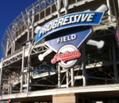
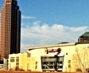

Cleveland Browns
Cleveland BrownsTraining Camp
76 Lou Groza Boulevard
Berea, Ohio 44017
Home Field
FirstEnergy Stadium
100 Alfred Lerner Way
Cleveland, Ohio 44114
Cleveland Browns
First Energy Stadium is the home to the Cleveland Browns of the National Football League. It opened in 1999 as a multi-purpose open air venue. The stadium is located on 31 acres of Lake Erie shoreline and has the seating capacity of 73,200, this makes it the 10th largest stadium in the NFL.
The Cleveland Browns were estabished in 1946 boasting 8 league championships, 11 conference championships, 13 division championships and 28 playoff appearences in the franchise history. The fan base for the team is fiercly loyal, and widely visible in the Dawg Pound, the area located at the east end of the field. The Dawg Pound is home to the many fans sporting the teams trademark orange and brown as well as various dog related attire.

Cleveland IndiansHome Field
Progressive Field
2401 Ontario Street
Cleveland, Ohio 44115
Cleveland Indians
This home of the Cleveland Indians was opened in 1994, as part of the downtown located Gateway Sports Complex. Named by fans as the Major League Baseball's Best Ballpark in 2008 by Sports Illustrated, the park boasts many eateries and family friendly amentities, such as the Terrace Club, the Budweiser Patio and the Kids Clubhouse. Just steps outside the park are the breathtaking views of the Cleveland skyline and Heritage Park, honoring players in the Cleveland Indians Hall of Fame with now 27 plaques and 38 bricks with some of the teams most memorable moments dating back to the start of the franchise in 1894.  Cleveland Cavaliers
Quicken Loans Arena
1 Center Court
Cleveland, Ohio 44115
Cleveland Cavaliers
Opened in 1994 as the home of the Cleveland Cavaliers basketball and now to the Lake Erie Monsters hockey team. The arena is a multi-purpose venue for sporting, music and various other events. It was built on what is the former Central Market that dated back to 1865, and replaced the Richfield Coliseum as the Cavs home. As part of the Gateway Sporting Complex, the Q adds to the beauty of the Skyline all while providing over 20,000 seats.